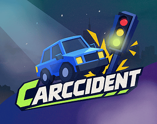

Delvin Susilo · Game Design Case Study
Carccident

Gameplay

Game Description
Carccident is a traffic-management game where players control traffic lights to keep vehicles moving and prevent collisions. Each vehicle has limited patience. If it waits too long at a red light, it will drive through, creating a new risk at the intersection.
Core Loop
Observe Traffic and Waiting Vehicles → Adjust Traffic Lights → Resolve Traffic Conflicts → Repeat
Watch incoming vehicles and identify which lanes need attention. Change the traffic lights to let vehicles pass while holding conflicting traffic. Reassess the intersection as new vehicles arrive and waiting drivers lose patience.
Personal Contributions
I designed the core gameplay loop, connecting traffic management with performance-based rewards and upgrade progression. I also designed the game’s UI/HUD, planning how gameplay information and controls would be presented to the player.
I developed the initial scoring structure, awarding points for vehicles passing through the intersection and time spent in a shift, while deducting points for collisions. The total score would determine the money earned, linking the player’s performance to progression.
Alongside these systems, I contributed to team discussions about traffic-light rules. I identified an opportunity for opposing directions to move simultaneously when their paths did not intersect and proposed adjusting the rules to reflect the game’s vehicle movement.
Design Decisions — Scoring & Progression
My initial scoring proposal combined three factors:
- Cars passed: Award points for each vehicle that successfully passes.
- Shift duration: Award points based on time spent in the shift.
- Collisions: Deduct points when accidents occur.
The intention was to reward both sustained play and successful traffic management while giving collisions a cost. Total points were then converted into money.
The game’s upgrade system includes slower battery depletion and increased rewards per passing vehicle, connecting the money earned during a shift to improvements for subsequent attempts.
Design Decisions — Traffic Flow
During a team discussion, I identified that eastbound and westbound vehicles could move simultaneously without colliding, since their paths did not intersect in the straight-through road layout. I questioned whether making these directions wait for each other added a meaningful challenge.
I proposed allowing both directions to move together, keeping traffic restrictions tied to actual collision risks. I also pointed out that turning vehicles could introduce conflicting paths and require different signal rules. This discussion helped us examine how traffic-light behavior should relate to the game’s vehicle movement.
Design Breakdown — Traffic Flow and Patience
The patience mechanic introduces a consequence for keeping a lane stopped for too long. A red light temporarily controls traffic, but it cannot hold vehicles indefinitely.
The balancing focus is the relationship between incoming traffic, waiting time, and opportunities to clear each lane. The design goal is to give players reasons to change priorities while preserving enough time to understand a dangerous situation and respond.